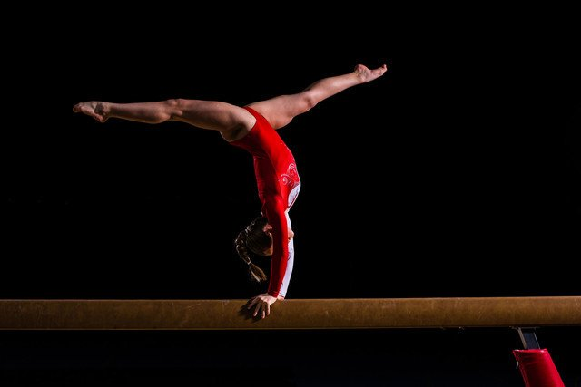

Gymnastics is a recreational activity and a competitive sport involving the performance of exercises requiring strength, flexibility, balance and control.
The best known of the gymnastic events is Artistic Gymnastics. Apparatus for Women's Artistic gymnastics typically involves the use of vault, uneven bars, balance beam and floor. Apparatus for Men's Artistic gymnastics typically involves the use of floor, pommel horse, rings, vault, parallel bars and high bar.
Gymnastics evolved from exercises used by the ancient Greeks and was originally used as part of military training and included skills involved in mounting and dismounting a horse.